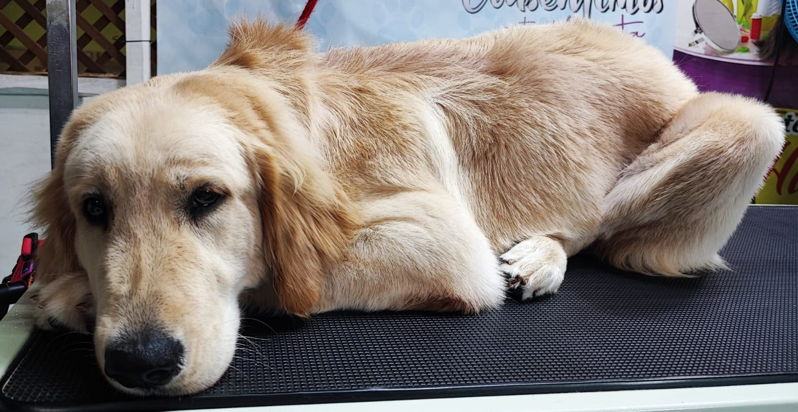
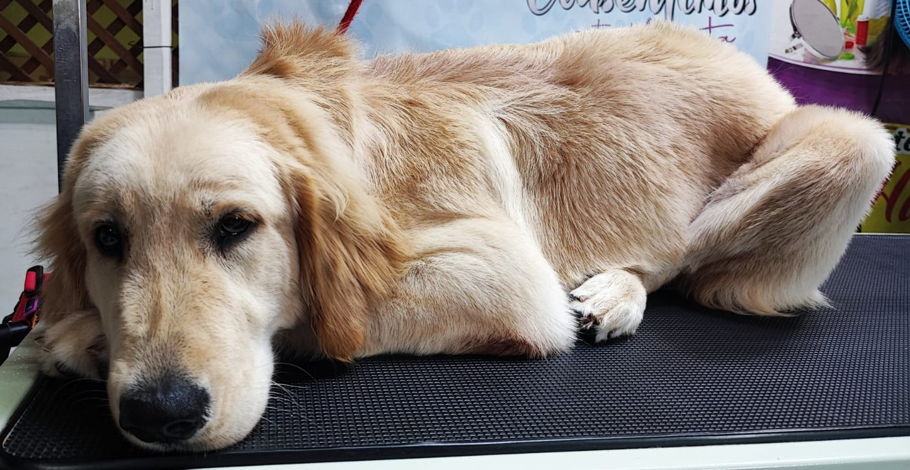

Bienvenido a nuestra página web, Clínica Veterinaria EL Hato, en está páguna web obtendras información sobre nuestros servicios que ofrecemos a nuestros clientes, en los cuales están los siguientes
 
